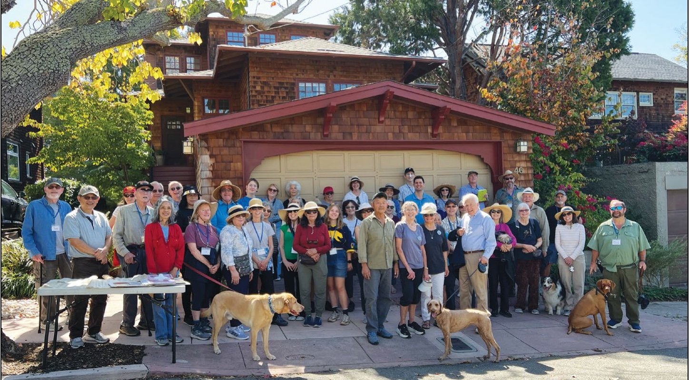

News
The City Council voted unanimously on Monday, October 5 to appoint Bonnie Tam as Piedmont’s next Public Works Director. Tam brings nearly 20 years of local government experience in public works operations, capital improv…
Jake Lannonp. 1, 25
News
Pumpkin sales at the Wildwood Dads Club’s (WWDC) Pumpkin Patch are scorching hot this year, with more than 1,100 pumpkins, gourds and other items sold in the first 10 days. A big reinforcement, sure to tip the scales, is…
Jay Russellp. 1, 9
News
Each election cycle, the Piedmont Post provides extensive coverage of each candidate to help residents make informed voting decisions.
Jake Lannonp. 1, 27

News
The Piedmont League of Women Voters hosted a Candidates Forum on Tuesday, September 29. The hour-long forum asked candidates running for City Council to respond to many of the community’s pressing questions. The five can…
Jake Lannonp. 1, 27
Opinion
Editor:
Susan Goldsmith and Joseph Waxmanp. 2
Notices
Newsstand copies of the Piedmont Post are available at Mulberry’s Market. Copies of the paper may be purchased for $1.81 + tax during business hours. Weekly delivery to homes in Piedmont and online access is available by…
Piedmont Postp. 2
Notices
The Piedmont Post remains available online to all subscribers, no matter where they live. To have access to the online Post, type piedmont-post.com for a Google search. The entire edition is online. You must log in and u…
Piedmont Postp. 2
Notices
If your Piedmont Post was not delivered this week,
Piedmont Postp. 2
Notices
For 28 years, Piedmont residents have made sure their travels are well documented, with photos of family members reading the Piedmont Post in faroff places throughout the world, and some nearby.
Piedmont Postp. 2
Features
– Rafael Nadal
b. 1986
Spanish professional tennis champion
Piedmont Postp. 2
Notices
The Piedmont Post welcomes its readers to express their opinions on any topic. Columns in the Piedmont Post are exclusive and may not be reprinted without permission.
Piedmont Postp. 2
Letters
Editor,
Fran Bishopric Wolfe and Cameron Wolfe, Jr.p. 3
Letters
Editor,
Kim Hunterp. 3
Letters
Dear Editor,
Sara Lillevandp. 3
Letters
Editor,
Erin and Andrew Schultzp. 3
Letters
Dear Piedmont Neighbors,
Sarah Pearson and Evan Seevakp. 3, 25
Letters
Editor,
Teddy Gray Kingp. 3
News
Mayor Betsy Smegal Andersen will deliver Piedmont’s 2026 State of the City address on Thursday, October 15, at 5:30 p.m. in Community Hall. The evening is a chance to come together as a community to celebrate Piedmont, r…
Piedmont Postp. 4
News
On November 3, Piedmont voters will elect representatives to fill three seats on the Piedmont City Council and to federal, state, county, and special district offices. The ballot also includes a proposed increase to the …
Piedmont Postp. 4
News
The Piedmont Fire Department is asking community members to complete a brief disaster preparedness survey by October 30. The survey will measure changes since 2024 and help guide future preparedness efforts.
Piedmont Postp. 4
News
At the September 22 City Council meeting, the Council voted to award the Moraga Avenue Pedestrian Safety Project contract to Terocons Inc. for $785,533. The project will install safety improvements as recommended in the …
Jake Lannonp. 4

News
On Monday, October 5, Oakland Mayor Barbara Lee announced that Children’s Fairyland has secured a $5,000,000 allocation from the state of California to close out phase one of its capital investment in the park. The funds…
Jay Russellp. 5
Features
Mocha is a 6-year-old Siamese mix who knows how to make herself at home. Although she’s guarded in new situations, when she’s relaxed, you might find her snoozing in a lap or accepting belly rubs. When she wants to play,…
Quinn Whitep. 5
Schools
On Wednesday, September 30, Piedmont High School held its annual Consent Assembly for seniors and freshmen. The assembly, organized by acting teacher Kim Taylor, junior Stella Joseph, and senior Ben Ramakrishnan, involve…
Julia Stokesp. 6
Schools
There are lots of signs that fall is arriving in the Bay Area. The days are getting shorter. Leaves are beginning to change. And in my family, we start looking for spiders.
Dr. Megan Taylorp. 6, 9
Events
Thursday, October 8 — 10:30 – 11:30 a.m.
Piedmont Postp. 6
Schools
Dress Best for Less, Piedmont’s longtime resale shop, has pledged $100,000 to the Piedmont Education Foundation’s 2026 Giving Campaign, continuing a relationship with Piedmont schools that has spanned more than four deca…
Heather Meilp. 7
Schools
Piedmont Middle School presents Frozen JR. October 23-25, based on the 2018 Broadway musical. The show features all of the memorable songs from the animated film, with music and lyrics by Kristen Anderson-Lopez and Rober…
Amy Moorheadp. 7
Schools
After years of colleges moving away from requiring standardized testing, the admissions process is shifting once again. As more universities reinstate SAT or ACT requirements, high school students are reconsidering the r…
Ayla Blanfordp. 7

Features
Every year, Harvest Festival scarecrows are constructed by Piedmont students to be auctioned off in Piedmont Park during the event to fund the schools. The Havens TK pumpkin and 3rd-grade turkey scarecrows both started a…
Jay Russellp. 8
Events
Oaklandzoo.org 9777 Golf Links Rd, Oakland; 632-9525
Jay Russellp. 9
Schools
On Saturday, September 26, Girl Scout Troop 32605 gathered books for their book drive. More than 800 books were donated by the troop to Bananas, a local nonprofit in Oakland that serves low-income families.
Piedmont Postp. 10
News
Street sweeping is critical for keeping storm drains clear during leaf drop season. Residents should move cars and any other obstacles blocking access to the curb off the street on street sweeping days.
Piedmont Postp. 11
News
To help Piedmont’s Department of Public Works keep the streets free of leaves during the fall and winter months, residents are asked to observe four rules:
Piedmont Postp. 11
News
1 Residential Burglary 1 Fraud Report 2 Vandalism Report 3 ALPRs triggered (Automatic
Piedmont Postp. 11, 25
Sports
Piedmont High’s girls’ volleyball team claimed a big 3-0 sweep of Castro Valley on Thursday, October 1 at Binks Rawlings Gym, improving their record to 14-8 with five matches left in the regular season. The victory marke…
Jonathan Comeauxp. 12
Sports
We have now rolled through the first month of school. With our first Athlete of the Month of the new school year, we’re awarding Maika Ting of girls’ volleyball and Henry Stein of boys’ water polo our two Athletes of the…
Jonathan Comeauxp. 12, 28
Sports
Piedmont High’s girls’ tennis team won two of its last three matches last week. They beat North Coast Section foe College Prep 6-1 on Tuesday, September 29 at the Corey Reich Tennis Center, but lost 4-3 to NCS rivals Hea…
Jonathan Comeauxp. 13, 28
Sports
Piedmont High’s boys’ water polo team suffered two losses on the road over the past week, bringing their overall record to 6-8 overall and 1-2 against Western Alameda County Conference opponents. The Highlanders suffered…
Jonathan Comeauxp. 13
Sports
Some events subject to change. (Revised - 10/7/26)
Piedmont Postp. 13
Sports
Piedmont High’s cross country team traveled to Point Pinole Regional Park in Richmond for their first Western Alameda County Conference meet of the season on Wednesday, September 30. The boys’ team finished fifth of nine…
Jonathan Comeauxp. 14
Sports
It was a big night for the flag football team when hosting American on Thursday, October 1, The Highlanders beat the visiting Eagles by a one-sided 53-6 score. The result improves Piedmont’s record to 7-8 overall and 6-4…
Jonathan Comeauxp. 14
Features
Spooky season has arrived with Halloween right around the corner. What better time to awaken some spooky history of around the area, including your very own town?
Jonathan Comeauxp. 15
Arts
Festival Opera’s Salon Series continues October 25 with Mad Scenes, a concert featuring sopranos Aura Veruni and Lila Khazoum and pianist Daniel Lockert at the Piedmont Center for the Arts.
Allyson Alekseyp. 16
Arts
Autumn Lights Festival, an art-filled and family-friendly fundraising event for the Friends of the Gardens at Lake Merritt (FGLM), returns this year on Thursday, October 15.
Allyson Alekseyp. 16
Arts
Filoli’s “Nightfall Halloween” event is underway at the historic Woodside estate, with more than 53,000 tickets sold across its fall programs following a sold-out opening weekend.
Allyson Alekseyp. 16
Arts
San Francisco Playhouse is presenting Peter Pan Goes Wrong, a comedy about an amateur theater company attempting to stage Peter Pan while a series of mishaps threatens to derail the production.
Allyson Alekseyp. 17
Arts
Music at Kohl Mansion will open its 44th season on October 18, with a performance by the Escher String Quartet, an internationally recognized chamber ensemble based in New York City.
Allyson Alekseyp. 17
Arts
San Francisco Opera hosts a costume collection sale in Burlingame October 17 and 18, offering shoppers the chance to purchase theatrical garments and accessories from decades of productions at the War Memorial Opera Hous…
Allyson Alekseyp. 17
Arts
What does it mean to find your voice—and a place to belong? The Piedmont East Bay Children’s Choir (PEBCC) will explore that question at its 2026 Benefit Concert & Auction, “The Sound of Home,” at 6 p.m. on Saturday, Oct…
Piedmont Postp. 18
Arts
The Young People’s Symphony Orchestra (YPSO), California’s oldest youth orchestra and the second-oldest in the United States, announces its landmark 90th Anniversary Season, celebrating nine decades of guiding young musi…
Piedmont Postp. 18
Events
Ongoing through November 1
Piedmont Postp. 18

Features
Braving another warm day on Sept. 30, the last day of the month, 50 members of the Piedmont Recreation Department’s Walking on Wednesdays group and five of their canine companions gathered at the Exedra excited to see if…
Ken Hubbertp. 20
Features
High in the French Alps, where vineyards cling to steep slopes beneath snow-capped peaks, the wines of Savoie are gaining attention for their distinctive character and sense of place.
Pierre DuMontp. 21
Features
The world of competitive dog sports can be one of the most exciting for canine enthusiasts. There is the opportunity to meet fellow dog lovers, win awards for your pup, and spend quality time with them. Unfortunately, fe…
Sierra Berrickp. 22
Obituary
J. Ronald (Ron) Pengilly passed peacefully on September 28, 2026. Ron was born on May 5, 1934 to Joseph and Lillian Pengilly in Montebello, CA where he was raised. He leaves behind his beloved wife of 67 years, Margaret …
Piedmont Postp. 22
News
A new Oakland nonprofit, ReQuip, is giving gently used medical equipment and supplies a second life, while making those resources available free of charge to people throughout the community. The organization was created …
Christy Guidicip. 22

History
Part 2 in a series
Gail G. Lombardip. 23
Letters
To the Editor,
Jon Reiningp. 25
Letters
Editor,
Tim and Marian Nelsonp. 25
Letters
Editor,
Pamela Strike Fullertonp. 25
Letters
To the Editor:
Cory Smegalp. 25
Commercial feature
Happy Fall, all!
Piedmont Postp. 25
News
All candidates support Measure GG
Piedmont Postp. 27
Events
Meetings may be viewed on KCOM (Channel 27) and on the City’s website: piedmont.ca.gov.
Piedmont Postp. 28

Features
Piedmont Post columnist Joseph Gold in Geneva, Switzerland, on the shores of Lake Geneva with its famous fountain in the background. He is reading his favorite newspaper.
Piedmont Postp. 28
No matching stories. Try a different name or select all sections.